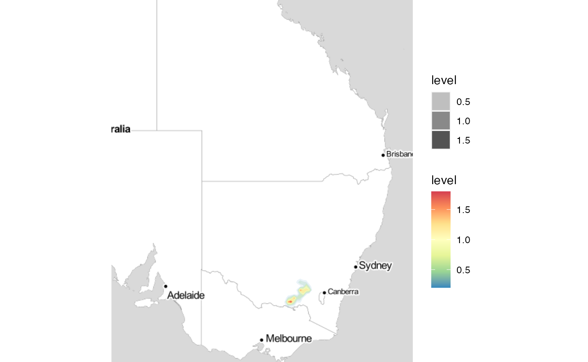
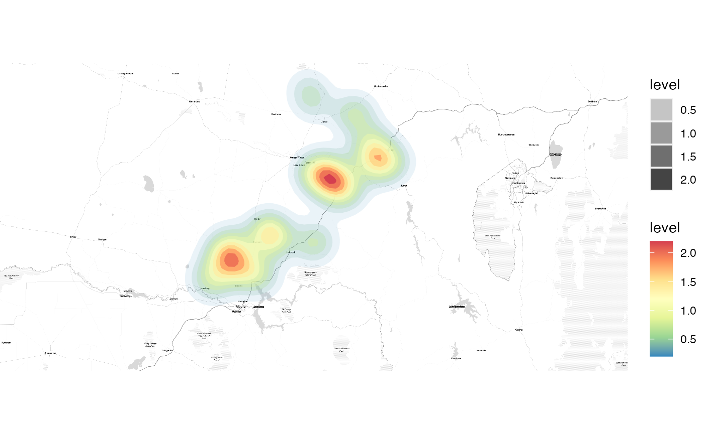
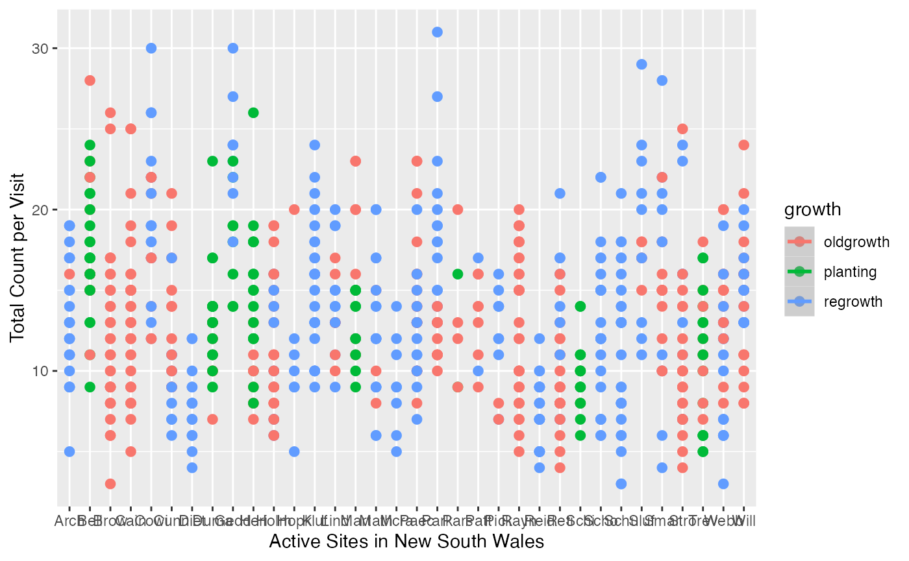
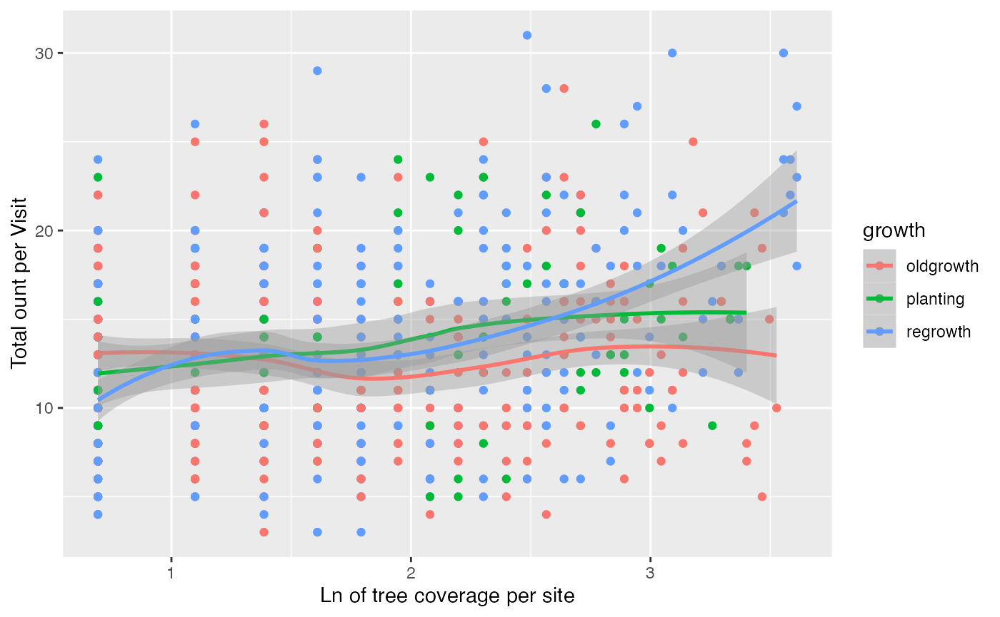

Avian Response to Recovering Landscapes
James Waterford
2023-04-05
Avian-response_Landscape-recovery.RmdAvian functional responses to landscape recovery
Citation: Ikin, Karen et al. (2019), Data from: Avian functional responses to landscape recovery, Dryad, Dataset, https://doi.org/10.5061/dryad.d6k0804
This data set has been retrieved from the DRYAD public domain, and released by Charles Darwin University, McGill University, and James Cook University.
The aim of this database was to measure the effect of restoring vegetation across 17 sites in Australia. This data set also includes the ecological traits of these birds, and the attributes of the restored sites.
Background
After searching DRYAD for an explanation of the dataset, I found a supplementary material on the published article in the Journal of Royal Society Publishing.
These first two data files were imported directly from DRYAD.
BirdData_full <- read.delim("../data-raw/Ikin_2019_BirdData.txt")
SiteData_full <- read.delim("../data-raw/Ikin_2019_SiteData.txt")
head(colnames(BirdData_full))## [1] "id" "amag" "apos" "arav" "bb" "bbowl"The files from DRYAD have abbreviated the species names, so I combined them with the supplemental material to recreate the table.
species <- read.csv("../data-raw/SPECIES-GENUS.csv")
new_names <- c("id")
append(x = new_names,species$Species,1) -> new_names
colnames(BirdData_full) <- c(new_names)
BirdSite_Data <- full_join(BirdData_full, SiteData_full, by ="id")
apply(X = BirdSite_Data[2:122], MARGIN = 2, sum) -> small_tableThe column names for the bird data reference different species that are local to Australia.
The IDs reference multiple measurements at multiple sites.
The SiteData.txt has all the information on the various
sites, including their geographic location.
# BirdSite_Data <- full_join(BirdData_full, SiteData_full, by ="id")
head(BirdSite_Data[122:130])## Yellow-tailed Black-Cockatoo Yellow-tufted Honeyeater year growth site
## 1 0 0 2002 oldgrowth ARCH-1
## 2 0 0 2002 regrowth ARCH-2
## 3 0 0 2002 regrowth ARCH-3
## 4 0 0 2002 regrowth ARCH-4
## 5 0 0 2002 planting BELL-1
## 6 0 0 2002 oldgrowth BELL-2
## farm land long lat
## 1 Arch Gundagai 148.0782 -35.13095
## 2 Arch Gundagai 148.1011 -35.16487
## 3 Arch Gundagai 148.0843 -35.16774
## 4 Arch Gundagai 148.0770 -35.17336
## 5 Bell Tarcutta 147.6615 -35.30462
## 6 Bell Tarcutta 147.6592 -35.30638Across New South Wales
Below is a heatmap of the sites that were measured. 
The sites are in the southern region of New South Wales, a state that is currently deforesting portions of the Nagmadi National Forest in Canberra.
While this dataset only is considering the family of birds in NSW, it is relevant to see how deforesting can affect native species populations. 
The SiteData.txt file also includes background on the
physical state of the farm (Planting / Regrowing / No Growth), as well
as the tree coverage.
Both of these are important vectors to consider the effect on the species.
Initial Explanation of Variables
BirdSite_Data %>%
filter(ln_cover != 0) -> BirdSite_Data
ggplot(data=BirdSite_Data, mapping = aes(x = farm, y = site.rich, color = growth)) +
geom_point(size = 2.25) +
geom_smooth(method = lm) +
xlab(label = "Active Sites in New South Wales") +
ylab(label = "Total count per Visit") ## `geom_smooth()` using formula = 'y ~ x'
ggplot(data=BirdSite_Data, mapping = aes(x = ln_cover, y = site.rich, color = growth)) +
geom_point() +
geom_smooth(method = loess) +
xlab(label = "Ln of tree coverage per site") +
ylab(label = "Total count per visit")## `geom_smooth()` using formula = 'y ~ x'
Taxonomic Analysis & OpenTree Taxonomy
The author had included a supplementary data table with their original article.
## ggtree v3.6.2 For help: https://yulab-smu.top/treedata-book/
##
## If you use the ggtree package suite in published research, please cite
## the appropriate paper(s):
##
## Guangchuang Yu, David Smith, Huachen Zhu, Yi Guan, Tommy Tsan-Yuk Lam.
## ggtree: an R package for visualization and annotation of phylogenetic
## trees with their covariates and other associated data. Methods in
## Ecology and Evolution. 2017, 8(1):28-36. doi:10.1111/2041-210X.12628
##
## G Yu. Data Integration, Manipulation and Visualization of Phylogenetic
## Trees (1st ed.). Chapman and Hall/CRC. 2022. ISBN: 9781032233574
##
## S Xu, Z Dai, P Guo, X Fu, S Liu, L Zhou, W Tang, T Feng, M Chen, L
## Zhan, T Wu, E Hu, Y Jiang, X Bo, G Yu. ggtreeExtra: Compact
## visualization of richly annotated phylogenetic data. Molecular Biology
## and Evolution. 2021, 38(9):4039-4042. doi: 10.1093/molbev/msab166 ##
## Attaching package: 'ggtree'## The following objects are masked from 'package:ggmap':
##
## inset, theme_inset##
## Attaching package: 'ape'## The following object is masked from 'package:ggtree':
##
## rotate## The following object is masked from 'package:dplyr':
##
## whereLet’s reduce species by the number found across the given sites.
I will generate a plot that represents the most abundant species of birds across these sites.
small_table <- data.frame((small_table))
colnames(small_table)[1] <- "Count"
small_table$Species <- c(species$Species[1:121])
small_table %>%
filter(Count >= 150) -> smaller_table
## Colnames[0] does not exist. There is no column to read by if I cannot grab this column. Revisit your named integer data frame.
left_join(smaller_table,species, by = "Species") -> bird_list
bird_taxa <- tnrs_match_names(bird_list$Scientific.name)
bird_taxa %>%
filter(flags == "sibling_higher") -> newlist
newlist## search_string unique_name approximate_match ott_id is_synonym
## 1 corvus coronoides Corvus coronoides FALSE 808257 FALSE
## 2 sturnus vulgaris Sturnus vulgaris FALSE 565813 FALSE
## flags number_matches
## 1 sibling_higher 1
## 2 sibling_higher 1
bird_tr <- tol_induced_subtree(ott_ids = bird_taxa$ott_id)##
Progress [---------------------------------] 0/213 ( 0) ?s
Progress [==============================] 213/213 (100) 0s
## Warning in collapse_singles(tr, show_progress): Dropping singleton nodes with
## labels: mrcaott246ott7145, mrcaott246ott5272, mrcaott246ott928360,
## mrcaott246ott1858, mrcaott246ott3600042, mrcaott246ott47588, Passeriformes
## ott1041547, mrcaott246ott3212, mrcaott246ott428578, mrcaott246ott32658,
## mrcaott246ott22325, mrcaott246ott176461, mrcaott246ott10351, mrcaott246ott3364,
## mrcaott246ott5934, mrcaott246ott1566, mrcaott1566ott3598440,
## mrcaott1566ott496009, mrcaott1566ott2175, mrcaott2175ott968664,
## mrcaott2175ott259082, mrcaott2175ott59905, mrcaott2175ott2224,
## mrcaott2224ott366470, mrcaott366470ott565813, mrcaott1488ott72472,
## mrcaott1488ott2375, mrcaott1488ott63797, mrcaott1488ott284404,
## mrcaott1488ott110316, mrcaott1488ott17016, mrcaott1488ott107463,
## mrcaott107463ott353520, mrcaott107463ott177058, mrcaott107463ott107476,
## mrcaott107476ott337752, mrcaott337752ott374222, mrcaott374222ott865537,
## mrcaott4820ott409116, mrcaott4820ott20989, mrcaott4820ott58860,
## mrcaott4820ott11462, mrcaott4820ott140440, mrcaott4820ott197505,
## mrcaott4820ott75978, mrcaott4820ott11315, mrcaott4820ott5933,
## mrcaott5933ott60456, mrcaott5933ott60465, Corvus ott952596,
## mrcaott5933ott25637, mrcaott25637ott199843, mrcaott25637ott473431,
## mrcaott25637ott686166, mrcaott25637ott111993, mrcaott25637ott183621,
## mrcaott25637ott249747, mrcaott25637ott48946, mrcaott48946ott197189,
## mrcaott48946ott872547, mrcaott48946ott269185, mrcaott269185ott5560983,
## mrcaott269185ott289433, mrcaott289433ott289472, mrcaott289472ott318519,
## Monarchidae ott817406, mrcaott23803ott754846, Grallina ott489918,
## mrcaott23690ott242575, mrcaott23690ott749725, mrcaott23690ott520286,
## Corcoracidae ott1092341, Corcorax ott659774, mrcaott20998ott31161,
## mrcaott31161ott226273, mrcaott31161ott72045, mrcaott31161ott71163,
## mrcaott31161ott72035, mrcaott31161ott276716, Gymnorhina ott613403, Artamus
## (genus in Deuterostomia) ott1054558, mrcaott563268ott563269,
## mrcaott75981ott80432, mrcaott80432ott174107, mrcaott174107ott877146,
## mrcaott174107ott258829, mrcaott174107ott309058, mrcaott174107ott352337,
## mrcaott352337ott634888, mrcaott352337ott842491, mrcaott352337ott408047,
## mrcaott408047ott632503, mrcaott258828ott258831, mrcaott258831ott258832,
## mrcaott258832ott258837, mrcaott258832ott258834, mrcaott258832ott366204,
## mrcaott258832ott258833, mrcaott258832ott877153, mrcaott258832ott366180,
## mrcaott366180ott884904, mrcaott17162ott89234, mrcaott89237ott89244,
## mrcaott89237ott675870, mrcaott675870ott7068331, mrcaott675870ott715129,
## mrcaott675870ott7068326, mrcaott89243ott663338, mrcaott89243ott101677,
## mrcaott89243ott95987, mrcaott95987ott849630, mrcaott95987ott95994,
## mrcaott95987ott140655, mrcaott140655ott4947730, mrcaott140655ott143158,
## mrcaott143158ott675868, mrcaott143158ott5561007, mrcaott143158ott534614,
## mrcaott143158ott4947734, mrcaott143158ott665637, mrcaott143158ott346147,
## mrcaott346147ott665636, mrcaott5929ott196938, mrcaott5929ott109304,
## mrcaott5929ott6258, mrcaott5929ott6262, mrcaott6262ott45233,
## mrcaott45233ott58052, mrcaott45233ott58048, mrcaott58048ott140612,
## mrcaott140612ott504461, mrcaott58049ott927348, mrcaott58049ott58050, Manorina
## ott465914, mrcaott58049ott465906, mrcaott376597ott701813,
## mrcaott376597ott927350, Anthochaera ott109305, mrcaott376597ott527595,
## mrcaott527595ott527605, mrcaott32480ott255826, mrcaott32480ott45221,
## mrcaott32480ott201676, Acanthiza ott808271, mrcaott32480ott161777,
## mrcaott32480ott808269, Gerygone ott918680, mrcaott32484ott32490,
## mrcaott32484ott315041, Pardalotidae ott1093579, Pardalotus ott598356,
## mrcaott757323ott1066393, Maluridae ott901832, mrcaott35023ott287283,
## mrcaott35023ott650063, Malurus ott901831, mrcaott35023ott804479,
## mrcaott35023ott168420, mrcaott168420ott436423, mrcaott436423ott563582,
## mrcaott44866ott308793, Climacteridae ott73972, mrcaott308793ott884906,
## Climacteris ott531218, mrcaott308793ott531212, Psittaciformes ott1020133,
## mrcaott7113ott33330, mrcaott7113ott7116, mrcaott7113ott225201,
## mrcaott7113ott7124, mrcaott7124ott7125, mrcaott7125ott58949,
## mrcaott7125ott233194, mrcaott7125ott14155, mrcaott7125ott961466, Platycercus
## ott512910, mrcaott19460ott893569, mrcaott19460ott209187, Psephotus ott246411,
## Cacatuidae ott512919, mrcaott58938ott119421, mrcaott58938ott7068761,
## mrcaott58938ott900913, Eolophus ott900916, mrcaott2907ott6895,
## mrcaott6895ott36453, mrcaott6895ott897867, mrcaott6895ott95396,
## mrcaott6895ott12995, mrcaott12995ott26078, mrcaott26078ott150514,
## mrcaott26078ott284298, mrcaott26078ott88365, mrcaott26078ott26085,
## mrcaott26085ott26092, mrcaott26092ott26094, mrcaott234476ott234478,
## mrcaott234476ott234479, mrcaott234479ott704458, mrcaott234479ott757734,
## mrcaott234479ott757735, Dacelo ott938421, mrcaott5021ott17146,
## mrcaott17146ott57819, Columbiformes ott363030, mrcaott17146ott45505,
## mrcaott17146ott28962, mrcaott17146ott17148, mrcaott28965ott380071,
## mrcaott28965ott147369, mrcaott147369ott392967, mrcaott392967ott550853, Ocyphaps
## ott981605
plot(bird_tr)